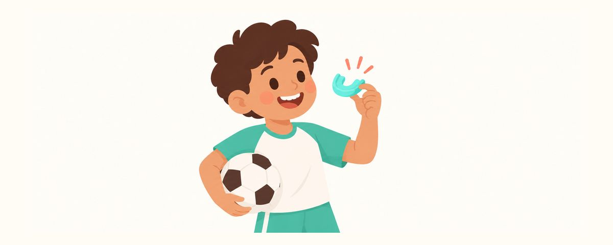

運動時請戴護齒套：不同種類的差別、怎麼挑選與保養
足球、籃球、跆拳道、騎腳踏車這類可能碰撞或跌倒的運動，護齒套能保護門牙。這篇整理了為什麼訂製的最好、為什麼練習時也要戴，以及保養方法。
重點一覽
- 容易碰撞或跌倒？請戴護齒套
- 牙醫師訂製的護齒套最合適
- 不只比賽，練習時也要戴
孩子加入足球隊，或開始學跆拳道，爸媽也會跟著擔心會不會受傷。運動時臉部被撞到、傷到門牙的情況，比想像中常見。這篇整理了為什麼需要護齒套，以及怎麼挑選、怎麼保養。
護齒套怎麼保護牙齒？
運動時被球打到、和同學相撞，或跌倒時臉撞到地面，門牙都可能斷裂或整顆被撞掉。尤其門牙換成恆牙之後，是要用一輩子的牙齒，傷到更可惜。
護齒套是套在牙齒上的軟質保護套。它能把撞擊時的衝擊分散、吸收，減少傳到牙齒、嘴唇和下巴的衝擊。 也能避免嘴唇或臉頰內側被牙齒撞到而割傷。
建議在這些活動中使用：
- 足球、籃球、跆拳道這類身體或球會碰撞的運動
- 騎腳踏車、滑板車這類可能跌倒的活動
護齒套大致分成三種：
- 訂製型：在牙科取孩子的牙齒印模製作。最合適，也最不容易掉。
- 熱塑型：泡熱水軟化後，咬一咬塑出形狀。是僅次於訂製型的選擇。
- 成品型：不塑形，直接戴上。容易掉出來，呼吸也不順，所以不建議。
不合適的護齒套，孩子會一直拿下來，最後就發揮不了作用。這就是為什麼說訂製型最好。
這樣準備，這樣使用
- 開始運動時，到牙科諮詢訂製護齒套。
- 不只比賽，練習時也要戴。 練習時一樣會受傷。
- 運動結束後用清水沖洗、晾乾，放進通風的專用盒裡保存。
- 不要放在很熱的車子裡或太陽底下，受熱可能會變形。
- 如果破了或變鬆，就重新製作。
如果孩子戴著矯正器，請不要用一般護齒套，改用專為矯正器設計的護齒套。因為矯正器容易刮傷嘴唇和臉頰，所以更需要。
孩子說不舒服，通常是不合適。合適的護齒套，幾乎不會妨礙說話和呼吸。不要因為孩子不喜歡就馬上放棄，先到牙科確認合不合適。
第一次戴的孩子可能會覺得不習慣。運動前在家先戴一下，試著說說話、大口呼吸，很快就會習慣。休息時拿下來的話，讓孩子放進盒子裡，不要隨手亂放；在盒子上寫上名字，也能避免和同學的拿錯戴錯。
爸媽常犯的錯誤，是做好一個護齒套就一直用好幾年。小學生的牙齒不斷在掉、在長，口腔的形狀常常改變。以前很合適的，不知不覺間也可能變鬆。
常見問題
跆拳道已經有全套護具了，還需要護齒套嗎？
只要是可能撞到臉或跌倒的運動，都建議使用。就算有頭部護具，嘴巴裡的牙齒和嘴唇還是要另外保護。
孩子的牙齒還在一直換，可以做訂製型嗎？
可以。在牙齒換得多的時期，定期檢查時會一起確認護齒套合不合適。變鬆或不合適了，就重新製作。
孩子說很悶，一直拿下來。
通常是因為不合適。如果用的是成品型，可以換成熱塑型或訂製型；如果已經是訂製型，請到牙科確認是否合適。
戴了護齒套，牙齒就不會受傷嗎？
它能減輕衝擊，但沒辦法完全擋住。就算戴著護齒套，牙齒被用力撞到時，也請讓牙醫師檢查。
出現這些情況，請帶孩子看牙醫
- 開始新的運動，想要做護齒套時
- 運動時撞到牙齒，牙齒鬆動或變色（就算不痛也要去）
- 牙齒斷裂或被撞掉（請馬上去）
- 護齒套破了或變鬆
- 開始戴矯正器，需要矯正專用的護齒套
在對的時候收到提醒
在牙齒日曆 App 中輸入孩子的出生日期（或預產期），這些文章就會在需要的時候以提醒的方式送達。免費使用，無須註冊。
參考資料
- AAPD · Policy on Prevention of Sports-related Orofacial Injuries (2023)
- ADA · Mouthguards (MouthHealthy) (2024)
本App中的資訊僅供一般衛教參考，無法取代專業牙科診療。關於孩子的狀況，請諮詢牙醫師。